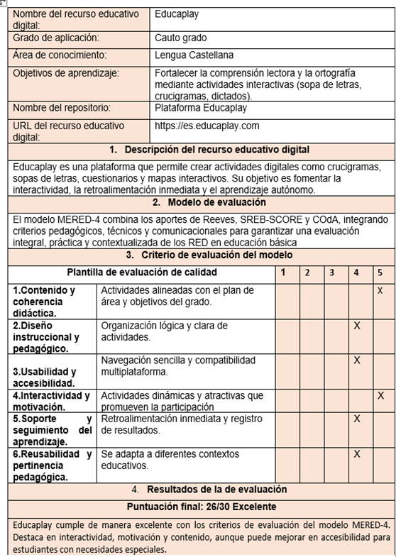

RED 1.
RED 2.
Aplicación de la rúbrica.
- Cada puntaje se evalúa con un puntaje entre 1 (muy bajo) y 5 (muy alto) según la escala definida
- Se recomienda incluir observaciones cualitativas en cada criterio para complementar la valoración numérica.
- • El puntaje final se obtiene sumando los valores de todos los criterios, lo que permite clasificar el recurso educativo en niveles de calidad:
Ventajas de la aplicación del modelo de evaluación: El modelo MERED-4 permite realizar una valoración integral de los Recursos Educativos Digitales, considerando aspectos pedagógicos, técnicos y comunicacionales. Facilita la comparación entre diferentes recursos mediante una rúbrica estandarizada con escala de 1 a 5, garantizando pertinencia pedagógica, usabilidad, accesibilidad y coherencia curricular. Asimismo, promueve la retroalimentación y la mejora continua, lo que contribuye a fortalecer el diseño y aplicación de los RED en contextos educativos diversos.
Desventajas de la aplicación del modelo de evaluación: Aunque es un instrumento integral, su aplicación puede requerir capacitaciones docentes para interpretar adecuadamente los criterios. En algunos casos puede dejar de lado aspectos cualitativos como la creatividad o el progreso individual de cada estudiante, y demanda tiempo adicional para la evaluación detallada de los recursos. Además, depende de la disponibilidad tecnológica (acceso a internet y dispositivos), lo que puede limitar su implementación en ciertos contextos escolares.
Analís de preguntas.
¿Cómo el modelo rediseñado permite evaluar el RED de manera adecuado?
El modelo MERED-4 permite una evaluación más completa porque integra criterios pedagógicos, técnicos y comunicativos en una única rúbrica. Esto facilita al docente valorar rápidamente la pertinencia, usabilidad y motivación en su contexto de aula.
¿Qué ventaja tiene frente a otros modelos?
El MERED-4 se diferencia de otros modelos porque integra los aportes más relevantes de Reeves, SREB-SCORE y COdA en un solo instrumento, adaptado al contexto escolar. Su principal ventaja es que resulta práctico y contextualizado, permitiendo valorar aspectos clave como la interactividad, la accesibilidad y la reusabilidad, que en otros modelos aparecen dispersos o poco detallados. Además, es más flexible y sencillo de aplicar, lo que lo convierte en una herramienta útil para los docentes en su práctica cotidiana.
¿Qué elementos deben mejorarse?
En el aspecto técnico, se requiere fortalecer criterios de accesibilidad, de modo que el modelo contemple de manera más explícita la inclusión de estudiantes con necesidades especiales.
En el ámbito pedagógico, puede incorporarse una mayor precisión en la evaluación de la motivación, ya que esta influye directamente en el compromiso de los estudiantes.
En cuanto al componente comunicacional, sería conveniente ampliar los indicadores relacionados con la interacción colaborativa y la retroalimentación entre pares, aspectos esenciales en entornos de aprendizaje digital.
Conclusión
El rediseño del modelo de evaluación de Recursos Educativos Digitales (MERED-4) permitió entregar los aportes más relevantes de los modelos REEVES, SCREB-SCORE y COdA en un instrumento práctico, contextualizados y fácil de aplicar en la educación básica. La aplicación de la rúbrica a los recursos Educaplay y Google Classroom evidenció que ambos son herramientas pertinentes y eficaces, con fortalezas en usabilidad, accesibilidad y coherencia pedagógica, aunque con limitaciones en motivación visual e interactiva en el caso de Classroom. El modelo rediseñado demostró su utilidad para orientar a los docentes en la selección y uso de RED de calidad, contribuyendo así al fortalecimiento de la práctica pedagógica, la innovación educativa y la inclusión de los estudiantes en entornos digitales.
Referencias
- Cabero, J., & Llorente, M. C. (2015). La evaluación de materiales didácticos digitales: propuesta de un instrumento de análisis. Revista de Educación a Distancia, 45(1), 1–28. https://revistas.um.es/red/article/view/234121
- Collazos, C., & Guerrero, L. (2007). Modelo COdA para la evaluación de objetos de aprendizaje. Universidad de los Andes.
- García-Peñalvo, F. J. (2017). La evaluación de la calidad en objetos y recursos educativos digitales. Education in the Knowledge Society, 18(2), 7–20. https://doi.org/10.14201/eks2017182720
- Norma UNE 71362. (2017). Calidad de los materiales educativos digitales. Asociación Española de Normalización (UNE).
- Reeves, T. C. (1997). Evaluating what really matters in computer-based education. University of Georgia.
- Southern Regional Education Board (SREB). (2001). Standards for Quality Online Courses. SREB Educational Technology Cooperative.